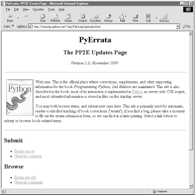

| I l@ve RuBoard |
|
14.3 The Root PageLet's start at the top. In this chapter we will study the complete implementation of PyErrata, but readers are also encouraged to visit the web site where it lives to sample the flavor of its interaction first-hand. Unlike PyMailCgi, there are no password constraints in PyErrata, so you can access all of its pages without any configuration steps. PyErrata installs as a set of HTML files and Python CGI scripts, along with a few image files. As usual, you can simply point your web browser to the system's root page to run the system live while you study this chapter. Its root page currently lives here:[1]
If you go to this address, your browser will be served the page shown in Figure 14-2. PyErrata supports both submission and browsing of comments and error reports; the four main links on this page essentially provide write and read access to its databases over the Web. Figure 14-2. PyErrata main pageThe static HTML code file downloaded to produce this page is listed in Example 14-1. The only parts we're interested in are shown in bold: links to the submission and browsing pages for comments and errata. There is more to this page, but we're only dealing with the parts shown in the screen shot. For instance, the site will eventually also include resource page HTML files (e.g., Python resources and changes), but we'll ignore those components in this book. Example 14-1. PP2E\Internet\Cgi-Web\PyErrata\pyerrata.html<HTML><BODY>
<TITLE>PyErrata: PP2E Errata Page</TITLE>
<H1 align=center>PyErrata</H1>
<H2 align=center>The PP2E Updates Page</H2>
<P align=center><I>Version 1.0, November 1999</I></P>
<HR><P>
<A href="http://rmi.net/~lutz/about-pp.html">
<IMG src="ppsmall.gif" align=left alt="[Book Cover]" border=1 hspace=8></A>
Welcome. This is the official place where corrections, supplements,
and other supporting information for the book <I>Programming Python,
2nd Edition</I> are maintained. This site is also described in the book:
most of its interaction is implemented in
<A HREF="http://rmi.net/~lutz/about-python.html">Python</A> as server-side
CGI scripts, and most submitted information is stored in files on the starship
server.
<P>
You may both browse items, and submit new ones here. This site is primarily
used for automatic, reader-controlled tracking of book corrections ("errata");
if you find a bug, please take a moment to fill out the errata submission
form, so we can fix it in a later printing. Select a link below to submit
or browse book-related items.
</P>
<HR>
<H2>Submit</H2>
<UL>
<LI><A href="submitErrata.html">Errata report</A>
<LI><A href="submitComment.html">General comment</A>
</UL>
<H2>Browse</H2>
<UL>
<LI><A href="browseErrata.html">Errata reports</A>
<LI><A href="browseComments.html">General comments</A>
</UL>
<H2>Library</H2>
<UL>
<LI><A href="resourceSupplements.html">Supplements</A>
<LI><A href="resourcePythonchanges.html">Python changes</A>
<LI><A href="resourcePatchfiles.html">Program patch files</A>
</UL>
<HR>
<A href="http://www.python.org">
<IMG SRC="PythonPoweredSmall.gif"
ALIGN=left ALT="[Python Logo]" border=0 hspace=10></A>
<A href="http://PyInternetDemos.html">More examples</A>
</BODY></HTML>
|
| I l@ve RuBoard |
|